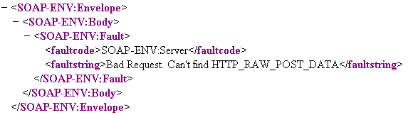
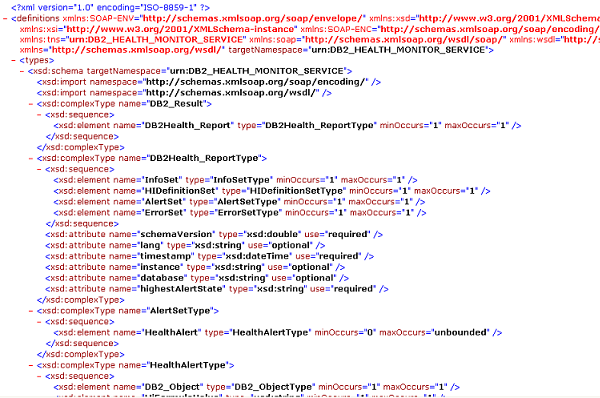
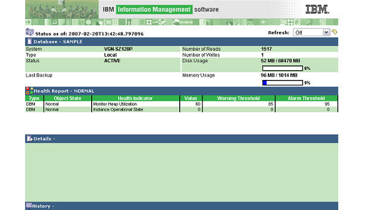

|

|
Testing the Sample Application
There are three main steps to follow when testing the DB2 Health Monitor
Sample Application:
|
Web Service Producer
First test to see if the
Web Service Producer
SOAP server is accessible by visiting the Web service URL.
The default for this application is:
http://localhost/SOADemo/producer/db2soa.soap.server.php
This URL might have to be modified depending on the Apache HTTP Server configuration used,
the deployment architecture chosen, and the name of the root directory used.
A SOAP client would normally be used to perform the test, however, even without one,
the service should treat the visit to the URL as a bad request (that is, it should throw
a SOAP fault exception - an XML report stating that the service request was invalid).
Different browsers might interpret this differently. If the test fails, continue with
this process.
A page similar to the following should be visible:

To test the WSDL document accessibility, visit the URL shown below. Ensure
that this URL is the same as the one listed in the
Web Service Consumer config.xml file:
http://localhost/SOADemo/producer/DB2Health_Report.wsdl
A page similar to the following should be visible:

Web Service Consumer
Upon logging into the sample application, ensure that at least the
Dashboard
is displayed. It is also possible to examine the
SortableTable
for health alerts, however, there may be no alerts for the specified database. Therefore,
the table cannot always be used to determine if the
Web Service Consumer
is operating correctly. A working
Web Service Consumer GUI
should appear similar to the following:

Additional information regarding the usage of the health monitor console
can be viewed in the
Using section of this documentation.
© Copyright IBM Corp. 2007. All rights reserved.
IBM®, the IBM logo, DB2®, AIX®, and pureXML™ are
registered trademarks of International Business Machines Corporation in the
United States, other countries, or both.
Zend and Zend Core are registered trademarks of Zend Technologies Limited,
in the United States, other countries, or both.
Mozilla® and Firefox® are registered trademarks of the Mozilla Foundation in the
United States and other countries.
Microsoft, Windows, Windows NT, Internet Explorer®, and the Windows logo are
trademarks of Microsoft Corporation in the United States, other countries, or
both.
Linux is a registered trademark of Linus Torvalds in the United
States, other countries, or both.
Other company, product, or service names
may be trademarks or service marks of others.